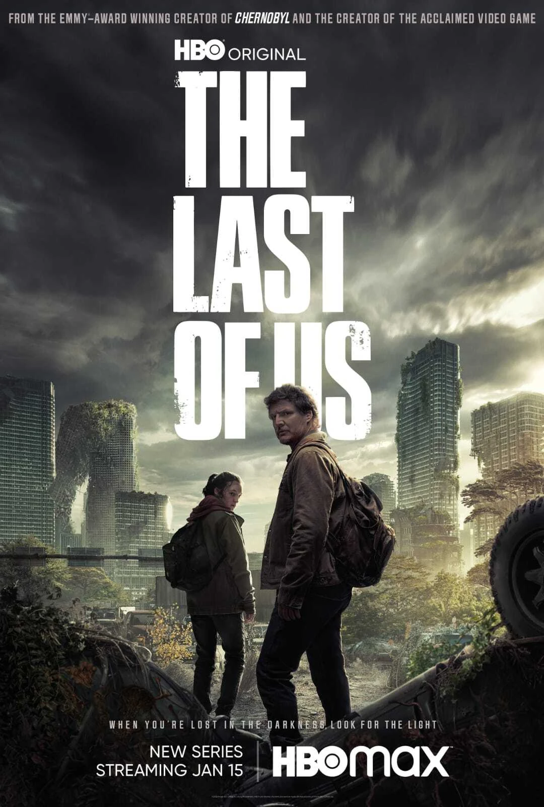
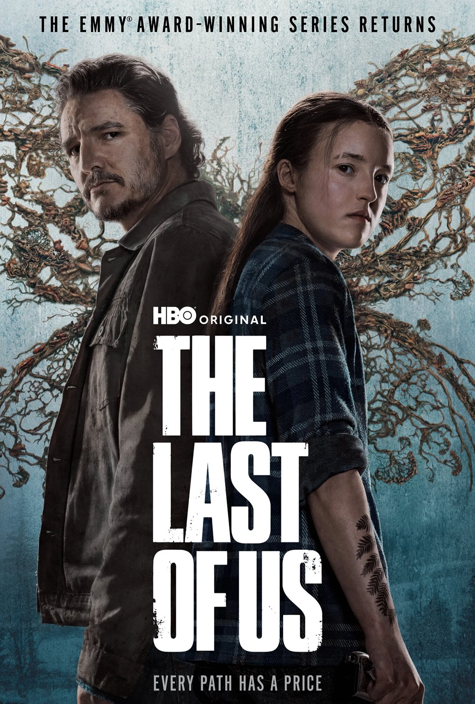
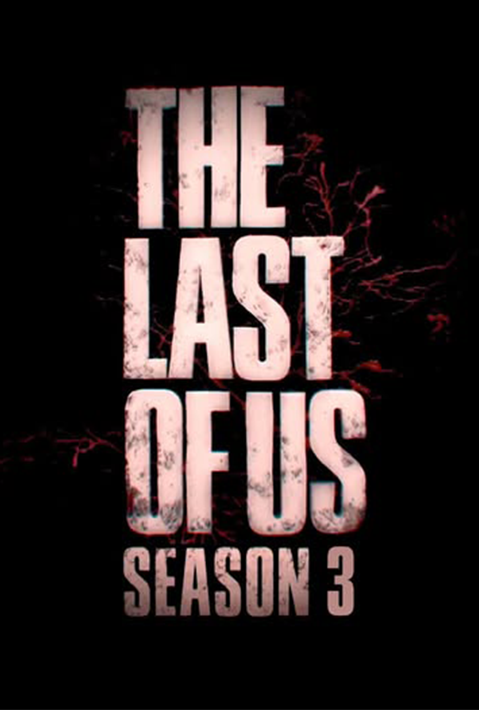

Temporada 1

Póster promocional de la Temporada 1.
- Fecha de estreno: 15 de enero de 2023
- Episodios: 9
-
Detalles: Adapta los eventos del primer juego,
centrándose en la relación de Joel y Ellie mientras viajan por una
América post-apocalíptica.
Trailer Oficial
Trailer Oficial de la Temporada 1.
Temporada 2

Póster promocional de la Temporada 2 de The Last Of Us.
- Estado: En producción / Próximamente
- Fecha de estreno: 2025 (Estimado)
-
Detalles: Adaptará parte de la historia de The
Last of Us Part II. Se esperan nuevos personajes y un enfoque más
oscuro y complejo.
Trailer Oficial
Trailer Oficial de la Temporada 2.
Temporada 3 (Confirmada)

Póster promocional de la Temporada 3 (confirmada).
- Estado: Oficialmente confirmada
- Fecha de estreno: Por anunciar
-
Detalles: Continuará la historia tras los eventos
de la segunda temporada. Se esperan más episodios basados en el
segundo videojuego.